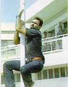
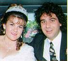

|
|
|
|
|
CYPRUS, an independent country, was invaded by Turkey in 1974. Two hundred
thousand Cypriots of Greek and Maronite descent were forced out of their homes in
northern Cyprus and became refugees in the south. Many thousands were killed, injured
or raped. Large numbers of illegal settlers were brought in from mainland Turkey
and most Cypriots of Turkish descent were forced into exile.
Occupied northern Cyprus has a puppet government controlled by Turkey and protected
by 40,000 Turkish soldiers. As specified by many International Agencies (eg. Amnesty
International), Turkey has one of the worst records on Human Rights violations in
the world.
Numerous United Nations Resolutions calling
for the immediate withdrawal of Turkish troops and the return of all refugees to
their homes have been blatantly ignored by Turkey. Meanwhile, the plight of the
Cypriot people goes on. No refugee has ever been allowed back in occupied northern
Cyprus. When they try to go back they are brutally attacked
and murdered by the Turkish Occupation Forces.
We ask you kindly not to visit occupied northern Cyprus and thus financially,
morally and politically provide support for the illegal and barbaric occupation
of our homelands. Thank you for your understanding and we wish you a pleasant stay
in free Cyprus.
NOTE: Visiting occupied northern Cyprus also constitutesa serious personal safety
and health hazard. The following, for example, apply to occupied northern Cyprus.
1)There are reports of endemic hydatid disease, brucellosis, rabies, salmonellosis
and bacterial meningitis.
2)The incidence of serious crime and road traffic accidents is very high.
3) Medical facilities are of a very low standard.
|
Mr. Solakis Solomon, a 23 year old refugee, was shot dead in cold blood by Turkish soldiers on 14 August 1996. He had just entered occupiednorthern Cyprus, unarmed, and in the presence of UN personnel he tried to lower the Turkish flag |
.Mr.Tassos Isaac, a 26 year old refugee, was brutally beaten to death by occupied northern Cyprus police, Turkish soldiers and illegal Turkish settlers an 11 August 1996. He was recently married and his wish was to go back to his homeland. |
|
|
|